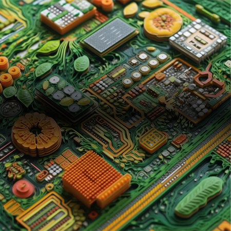
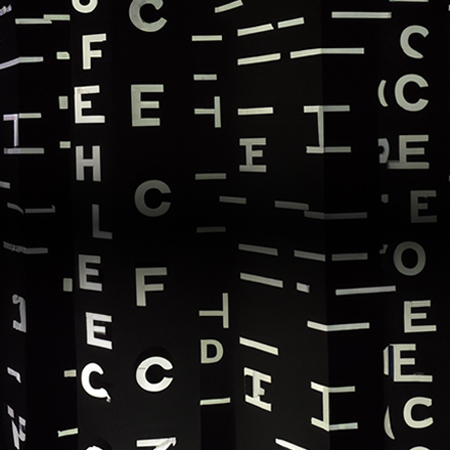

From babson.edu
The AI lab reimagining tech entrepreneurship.
Everyone is welcome here — enthusiasts, skeptics, and the simply curious; no AI experience required.
8 interdisciplinary Specialty Labs · Specialty Labs directory220+ students from 12 universities at the last Buildathon · 2nd Entrepreneurship & AI Buildathon, April 202550%+ of Babson faculty peer-trained in AI concepts and tools · AI Teaching Training Program (AITTP)40+ institutions convened by the Writing and AI Symposium · Writing and AI Symposium Series1,000 small business owners in AI training — a goal in progress · AI Innovators Bootcamp
This Week
Eight Specialty Labs
Find your lab →Theme-based innovation hubs, each led by faculty and anchored by its own open questions. Hover a lab to see its focus question.
AI Entrepreneurship
“How can AI support entrepreneurs to explore, evaluate, and seize entrepreneurial opportunities?”
Visit the lab →

Ethics & Society “How will AI help construct new visions of society, culture, and world in the future?” Visit the lab → Work Futures “What forms of collaborative work between humans and AI are possible and desirable?” Visit the lab → Experiential Learning “How can teaching with AI foster critical thinking and problem-solving in entrepreneurship education and beyond?” Visit the lab → Prototyping “How can entrepreneurs leverage AI assistants to facilitate ideation and rapidly validate design concepts?” Visit the lab → AI/ML Empowerment “How can the technical concepts underpinning AI & Machine Learning be made intuitive and understandable for entrepreneurs and educators from diverse disciplines and backgrounds?” Visit the lab →
Research & Writing “How do we establish writing processes that utilize generative AI in support of learning rather than replacing it?” Visit the lab → Arts & Performance “How can AI enhance and amplify creative expression across various artistic disciplines?” Visit the lab →Not sure where to start? Answer three questions for a recommendation.
Get Involved
All programs →
New to AI? Start here
A 10-minute on-ramp: what The Generator is, one video, and the one event this season built for beginners.
Always open
AI Credits — free compute
$1,000 grants from Babson (fast turnaround) or $1,000–$25,000 via Microsoft for Startups for your venture.
Applications open
Lab internships
Research, design, and communications roles inside the labs — multilingual AI, future-of-work research, Republic 2.0.
6 roles posted
AI Innovators Bootcamp
A 1-day, no-prerequisites AI deep dive for small business owners, taught by Babson faculty with students at your side.
Next cohort: registration open
B.R.A.I.N. — the Babson Regional AI Network
Meetups across New England connecting business owners, technologists, and researchers around entrepreneurial AI.
Meetups ongoing
Stay in the loop
Subscribe once: the faculty events calendar feed, or the digest email. The site comes to you.
Calendar feed available
CollaboratorAI
Find Babson faculty with overlapping research interests — an AI-assisted collaboration finder.
Live for Babson faculty
Support The Generator
Gifts fund student AI credits, the Buildathons, and the labs' public programming.